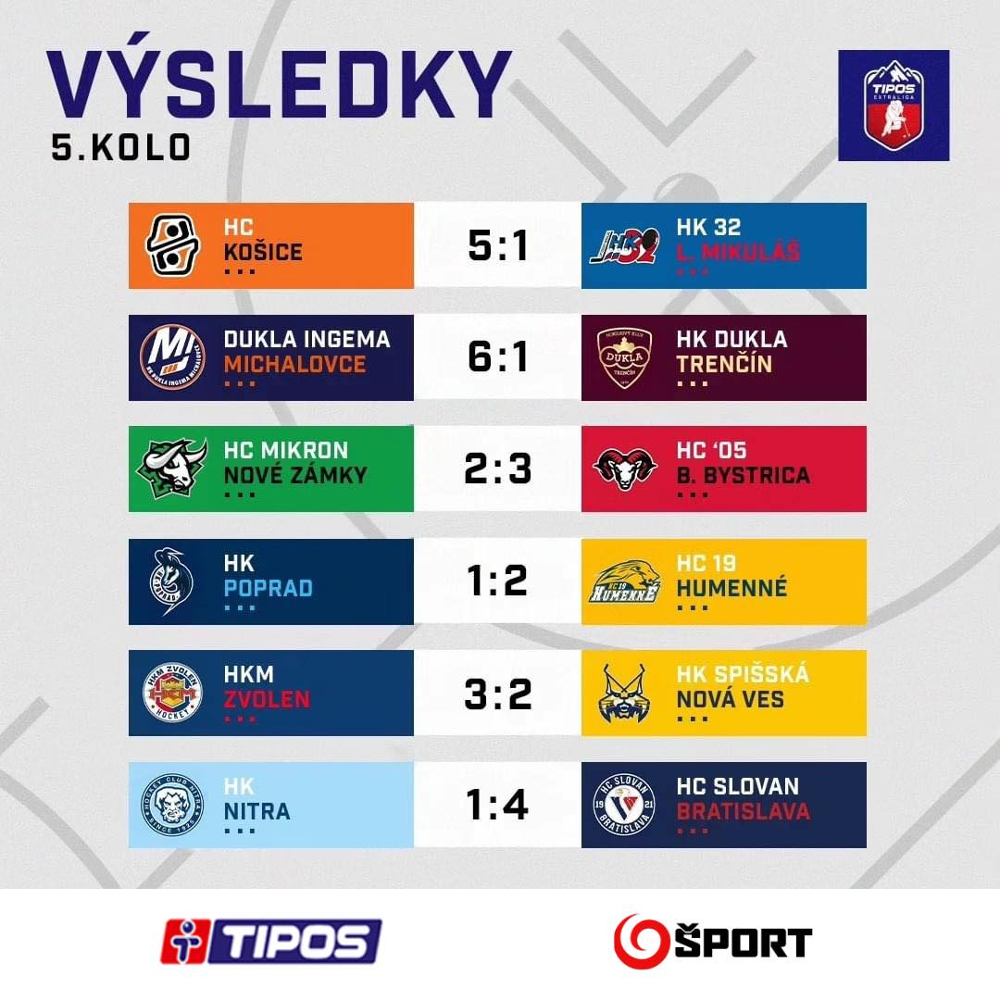

HOKEJ
Obhajca titulu vstúpil do sezóny podľa očakávania – dvoma výhrami. Ďalšie dva zápasy si však hokejisti HC Košice za klobúk nedajú. V Poprade prehrali úvodnú tretinu zahanbujúco 0:5 (celkovo 2:7), v Nových Zámkoch nestrelili ani gól a domácim podľahli 0:3.
Proti Liptovskému Mikulášu sa potrebovali rehabilitovať. Nešlo však o Liptákov z dna tabuľky, ako tomu bolo v predchádzajúcich sezónach. Na druhej strane stál súper, ktorý uspel v troch zo štyroch stretnutí.
